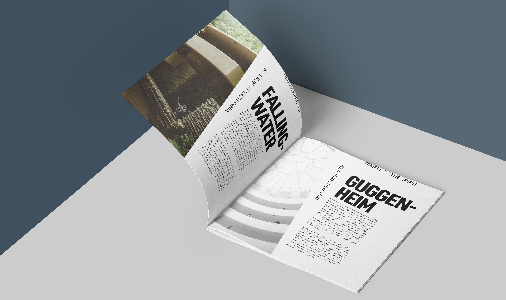

Typographic Composition
This typographic composition project was an exercise in creating meaningful typographic compositions. The goal of the project was to create effective advertising material for a fictional museum exhibition for renowned architect Frank Lloyd Wright. One of the major challenges of the project was creating a design system that incorporated various specific aspects of Wright's design methodology and system.